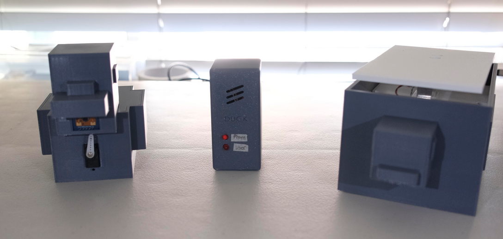
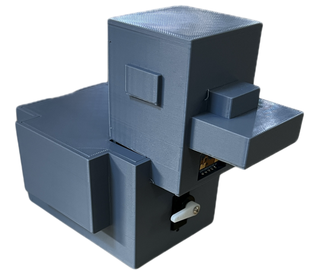
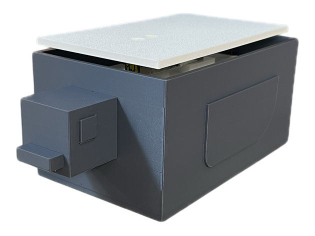
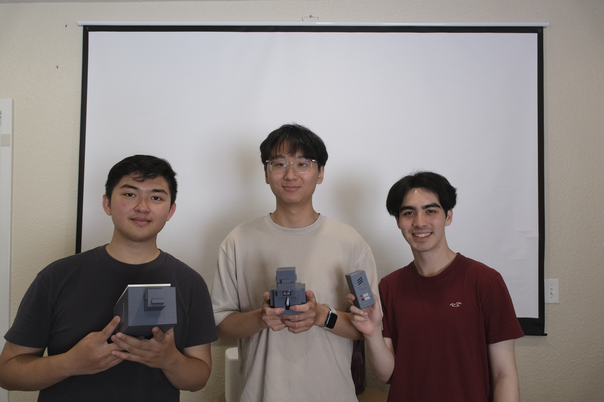
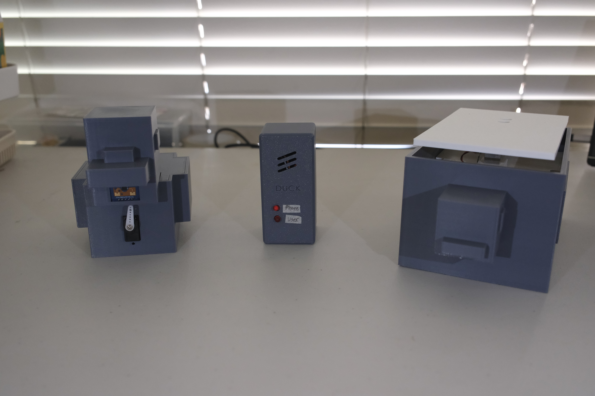
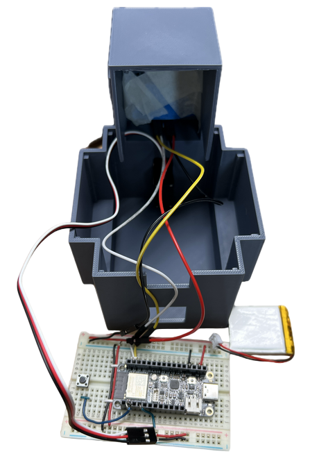
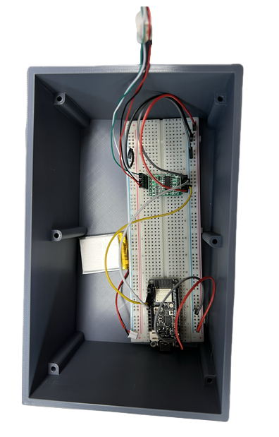
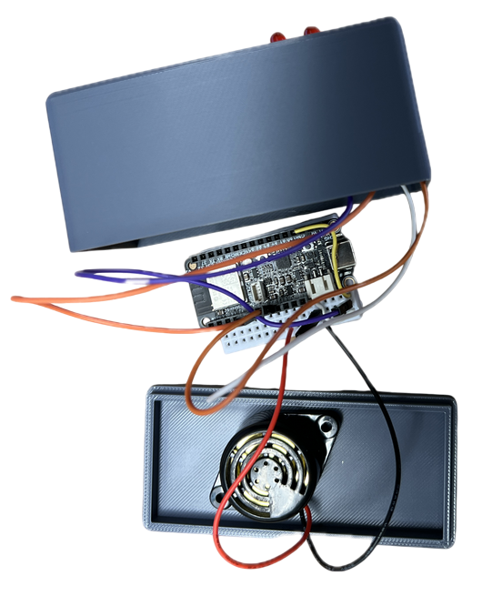
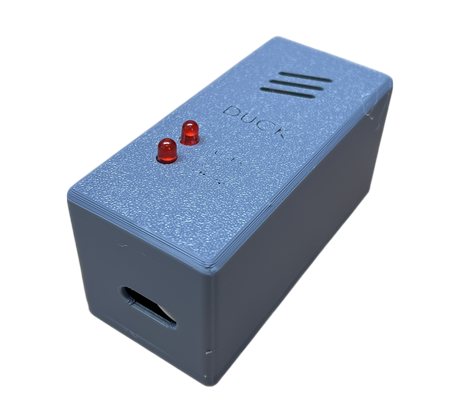

Developed a 3-device anti-procrastination system using ESP32 microcontrollers and ESP-NOW to actively monitor user presence and phone use during timed work sessions. The system was designed to operate without WiFi, allowing Buck, Puck, and Monitor to communicate across different rooms while providing real-time alerts to a third-party accountability partner. Combined sensor integration, embedded programming, mechanical design, and wireless communication into a single working system.
Selected and integrated 3 sensors and 3 actuators across the system based on their sensing range, reliability, and intended use. Used a mmWave sensor for human presence detection, a 1 kg load cell with an HX711 amplifier for phone detection, and a push button for controlling system states. Used LEDs and a piezoelectric buzzer for visual and auditory alerts, along with an FS90 microservo to provide a visual countdown timer.
Used for human presence detection at the user's desk. Unlike an ultrasonic sensor, the mmWave sensor can distinguish between living and non-living objects and detect presence without requiring a direct unobstructed path.
Used to detect whether the user's phone is present on Puck. Paired with an HX711 amplifier to convert the load cell's strain measurement into readable weight data, with a custom threshold used to identify when the phone is removed.
Used to start, pause, and resume work sessions. Sends state changes to the Monitor through ESP-NOW and triggers the servo and mmWave sensing sequence.
Designed custom CAD housings for each of the three devices around their respective electronics and sensing components, then developed the embedded software in MicroPython to control each device's sensors, actuators, and ESP-NOW communication — allowing Buck to sit near the user, Puck to sit in another room, and the Monitor to be carried by a third party, all without relying on WiFi.
Houses the mmWave sensor, servo motor, and push button in a custom duck enclosure. The servo sweeps 180° to give a visual countdown of the work session while the mmWave sensor monitors user presence. On the firmware side, Buck processes raw mmWave data through UART, filtering motion and static target readings by distance and signal energy, drives the servo sweep during a timed session, sends presence data to the Monitor over ESP-NOW, and implements pause, resume, and inactivity states with timeout logic to prevent the system from staying active indefinitely.
Built around the load cell and HX711 amplifier as a dedicated platform for detecting phone presence, with the load cell positioned to measure the phone's weight while the remaining electronics are packaged underneath. On the firmware side, Puck reads and calibrates load cell measurements through the HX711, averages the readings, applies a weight threshold to determine phone presence, and continuously sends weight data to the Monitor over ESP-NOW so the system can detect when the phone is removed.
A handheld enclosure housing the LEDs and piezoelectric buzzer used to notify the third-party accountability partner, sized to be carried while receiving alerts from the other two devices. On the firmware side, the Monitor acts as the central receiver for Buck and Puck and runs the overall system state machine — processing incoming weight and presence data, triggering buzzer patterns and LEDs based on the detected event, and managing active, paused, inactive, and completed session states.







